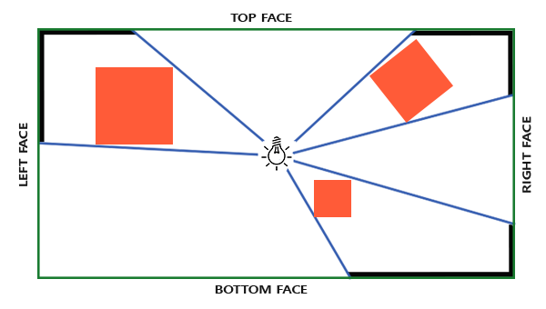

TODO…
点光源阴影
概述
shadow map是一项使用非常普遍的技术，这里不再赘述。
点光源阴影，英文omnidirectional shadow maps。由于点光源是向空间中四面八方照射，光线方向的范围是球面，因此很容发现，点光源如果要产生阴影，也需要获取四面八方的shadow map。

learnopengl提到了CubeMap用来做这件事很棒，采样6张shadow map的事也可以交给显卡去做！
这里我们使用DX12实现
创建CubeMap相关资源
1
2
3
4
5
6
7
8
9
10
11
12
13
14
15
16
17
18
19
20
21
22
23
24
25
| Eigen::Vector2i depSize{512, 512};
D3D12_RESOURCE_DESC depthDesc{};
depthDesc.Dimension = D3D12_RESOURCE_DIMENSION_TEXTURE2D;
depthDesc.Alignment = 0;
depthDesc.Width = depSize.x();
depthDesc.Height = depSize.y();
depthDesc.DepthOrArraySize = 6;
depthDesc.MipLevels = 1;
depthDesc.Format = DXGI_FORMAT_R32_TYPELESS;
depthDesc.SampleDesc.Count = 1;
depthDesc.SampleDesc.Quality = 0;
depthDesc.Layout = D3D12_TEXTURE_LAYOUT_UNKNOWN;
depthDesc.Flags = D3D12_RESOURCE_FLAG_ALLOW_DEPTH_STENCIL;
D3D12_CLEAR_VALUE clearDesc{};
clearDesc.Format = DXGI_FORMAT_D32_FLOAT;
clearDesc.DepthStencil.Depth = 1.0f;
clearDesc.DepthStencil.Stencil = 0;
D3D12MA::ALLOCATION_DESC allocDesc{.HeapType = D3D12_HEAP_TYPE_DEFAULT};
ThrowIfFailed(_context->Allocator()->CreateResource(
&allocDesc, &depthDesc,
D3D12_RESOURCE_STATE_GENERIC_READ,
&clearVal,
&_resAlloc,
IID_PPV_ARGS(&_res)));
|
由于只有要将纹理交给像素着色器使用，还要作为深度图交给管线去写入，因此这里资源的格式指定为R32_TYPELESS，精度也指定为32位，反正是学习和实验无所谓（
初始状态指定为GENERIC_READ，指定为COMMON应该也没差，之后反正要切换状态
有了Resource，我们还需要为之后给着色器采样创建SRV
1
2
3
4
5
6
7
8
| D3D12_SHADER_RESOURCE_VIEW_DESC srvDesc{};
srvDesc.Shader4ComponentMapping = D3D12_DEFAULT_SHADER_4_COMPONENT_MAPPING;
srvDesc.Format = DXGI_FORMAT_R32_FLOAT;
srvDesc.ViewDimension = D3D12_SRV_DIMENSION_TEXTURECUBE;
srvDesc.TextureCube.MostDetailedMip = 0;
srvDesc.TextureCube.MipLevels = 1;
srvDesc.TextureCube.ResourceMinLODClamp = 0.0f;
|
读取时的纹理格式指定为R32_FLOAT
接着为CubeMap的6张纹理创建生成各自的DSV，之后在渲染时传给管线。
1
2
3
4
5
6
7
8
9
| for (size_t i = 0; i < 6; i++) {
D3D12_DEPTH_STENCIL_VIEW_DESC dsvDesc{};
dsvDesc.ViewDimension = D3D12_DSV_DIMENSION_TEXTURE2DARRAY;
dsvDesc.Format = DXGI_FORMAT_D32_FLOAT;
dsvDesc.Texture2DArray.MipSlice = 0;
dsvDesc.Texture2DArray.FirstArraySlice = i;
dsvDesc.Texture2DArray.ArraySize = 1;
}
|
也没什么特殊的，唯一需要注意的是格式要指定为D32_FLOAT，不是R32_FLOAT
阴影Shader
learnopengl介绍了用几何着色器一次性处理6次场景绘制，也描述了不一定能加速的理由，那我们在这里就不用几何着色器，而是最naive的真的画6次吧（主要是懒
阴影shader里要做的事情很少，而且由于只写入深度信息，连颜色都不需要输出
1
2
3
4
5
6
7
8
9
10
11
12
13
14
15
16
17
18
| cbuffer _PreObject : register(b0) {
float4x4 g_model;
float4x4 g_mvp;
float4x4 g_invModel;
};
struct VertexIn {
float3 Pos : POSITION;
float3 Nor : NORMAL;
float2 UV0 : TEXCOORD0;
float4 Tan : TANGENT;
};
float4 VS(VertexIn vin) : SV_POSITION {
return mul(g_mvp, float4(vin.Pos, 1.0f));
}
void PS() {}
|
绘制阴影Pass
和定向光的阴影pass一样，把相机摆在光源坐标处看向场景，并记录深度信息。
这里我们以CubeMap在纹理数组里保存的顺序（就是X+，X-，Y+，Y-，Z+，Z-）来依次绘制。
定向光的相机使用的正交投影，因为定向光的光线间都是平行的照射到场景里。依此类推，点光源就应该使用透视投影，而且fov是90度，就可以生成无缝的CubeMap
1
2
3
4
5
6
7
8
9
10
11
12
13
14
| Eigen::Vector3f target[6] = {
Eigen::Vector3f{lightPos.x() + 1, lightPos.y(), lightPos.z()},
Eigen::Vector3f{lightPos.x() - 1, lightPos.y(), lightPos.z()},
Eigen::Vector3f{lightPos.x(), lightPos.y() + 1, lightPos.z()},
Eigen::Vector3f{lightPos.x(), lightPos.y() - 1, lightPos.z()},
Eigen::Vector3f{lightPos.x(), lightPos.y(), lightPos.z() + 1},
Eigen::Vector3f{lightPos.x(), lightPos.y(), lightPos.z() - 1}};
Eigen::Vector3f up[6] = {
Eigen::Vector3f{0, 1, 0},
Eigen::Vector3f{0, 1, 0},
Eigen::Vector3f{0, 0, -1},
Eigen::Vector3f{0, 0, 1},
Eigen::Vector3f{0, 1, 0},
Eigen::Vector3f{0, 1, 0}};
|
首先提前写好透视投影相机的参数。
1
2
3
4
5
6
7
8
9
10
11
12
13
14
15
16
17
18
19
| CD3DX12_VIEWPORT viewport(0.0f, 0.0f, depSize.x(), depSize.y());
cmdList->RSSetViewports(1, &viewport);
CD3DX12_RECT rect(0, 0, depSize.x(), depSize.y());
cmdList->RSSetScissorRects(1, &rect);
auto toWrite = CD3DX12_RESOURCE_BARRIER::Transition(depthMap->GetResource(), depthMap->GetInitState(), D3D12_RESOURCE_STATE_DEPTH_WRITE);
cmdList->ResourceBarrier(1, &toWrite);
for (size_t i = 0; i < 6; i++) {
cmdList->ClearDepthStencilView(depthView, D3D12_CLEAR_FLAG_DEPTH, 1.0f, 0, 0, nullptr);
cmdList->OMSetRenderTargets(0, nullptr, true, &depthView);
GlobalCBuffer global{};
global.View = LookAtLH(lightPos, target[i], up[i]);
global.Proj = PerspectiveLH(Radian(90.0f), 1, 0.1f, 1000.0f);
global.VP = global.Proj * global.View;
}
auto toInit = CD3DX12_RESOURCE_BARRIER::Transition(depthMap->GetResource(), D3D12_RESOURCE_STATE_DEPTH_WRITE, depthMap->GetInitState());
cmdList->ResourceBarrier(1, &toInit);
|
绘制过程也很简单，首先别忘了设置视口，也别忘了把CubeMap的状态转换为DEPTH_WRITE。
相机参数在CPU计算好后传到cbuffer
最后也别忘了把CubeMap的状态转换回去
绘制着色Pass
和普通着色的区别基本只在着色器里，CPU端唯一要做的只有绑定CubeMap的SRV到管线上
1
2
3
4
5
6
7
8
9
10
11
12
13
| float3 toLight = light.WorldPos - posW;
float dist = length(toLight);
float3 dirL = toLight / dist;
float vis = 0;
float depth = _PointShadow.Sample(g_Sampler, -dirL).r;
float far = POINT_LIGHT_FARZ;
float near = POINT_LIGHT_NEARZ;
float bias = POINT_LIGHT_BIAS;
depth = depth * (far - near);
vis = (dist <= depth + bias) ? 1 : 0;
// 后续着色...
|